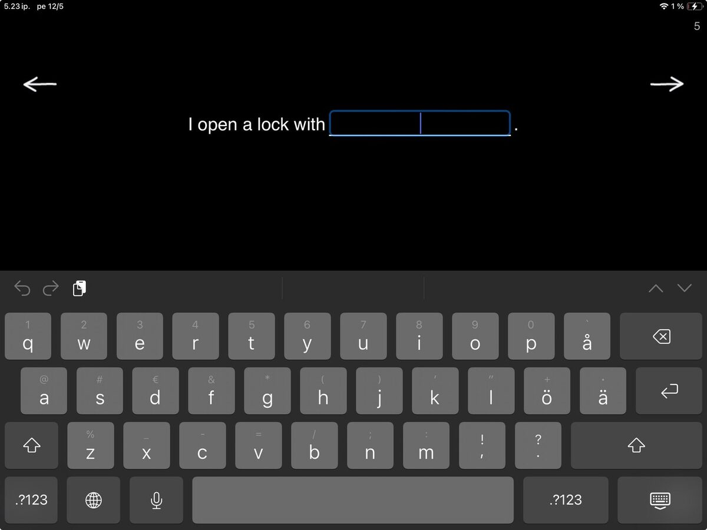
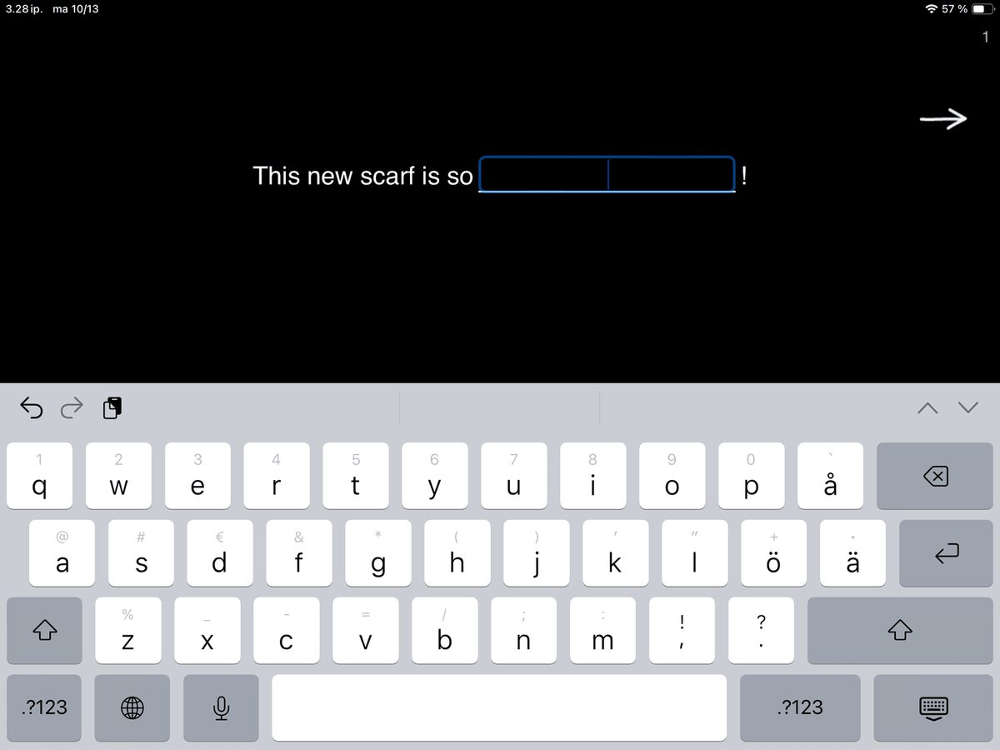
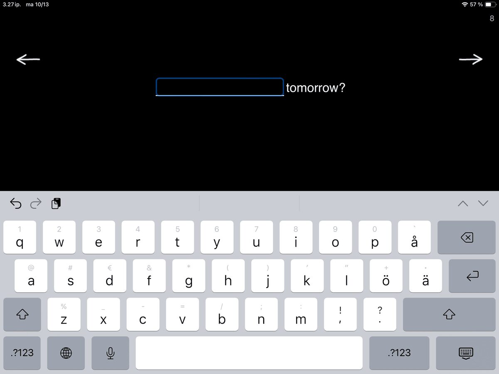

This exercise takes those word-level typing skills from Copy a Word and puts them to work.
When you open Fill in the Blank, you’ll see a sentence with one or more missing words. The task is simple: think of a word that fits and type it in.
This is one of those familiar tasks that can pack a bunch in the hands of a skilled therapist. While completing the sentence frames, patients aren’t just retrieving words. They are using context, grammar, reasoning, cognitive flexibility, initiation and creative expression all at once.
This exercise contains three levels. While navigating these levels, you’ll find material to provide challenges to patients with varied goals.
Level 1 — Word Retrieval in Context

At this level, the sentences are mostly missing a noun. Tasks like I open a lock with ____________. or After spring comes ____________. provide enough context to guide the patient and support them in finding the missing word.
It’s classic word-retrieval work, but it would not be SanapsisPro if it did not come with a twist of flexibility and real-life relevance.
In addition to straightforward sentences that point to a “correct” answer, many of the sentences at Level 1 invite the patient to fill in a word that makes the sentence relevant to them. For example, the sentence I bought tickets for the ______________ can become:
I bought tickets for the game.
I bought tickets for the play.
I bought tickets for the movie.
Each version works, and each one tells you something about the person writing it. If a patient writes the game, I try make a mental note to ask what sport they enjoy watching after we complete the writing tasks. If appropriate, we can build on that and maybe work on some specific vocabulary during our next session or use that theme for homework. This is one way completing a simple task can become a bridge to meaningful conversation.
Level 2 — Descriptive Words and Nuance
This level focuses on descriptive words and embedding meaning into a simple sentence. This is a task that quietly does a lot. On the surface, the patient is just thinking of a suitable word to fill in a simple sentence. However, under the surface, they are generating meaning, making connections between their experiences and the scenario in the sentence, thinking of different options, and making decisions about what they wish to convey in this particular moment. Some examples of sentences at this level are:

The restaurant has received ____________ reviews.
This new scarf is so ____________.
Writing that This new scarf is so warm, big, or uselessreveals intent and tone. By choosing a descriptive word, they determine meaning of the sentence and convey new information.
You can also modify the task: add a constraint like asking the patient to find words that keep the sentence always positive, or provide two or three options and ask the patient to select a word that they think works best.
I like to use these tasks to challenge patients who are fluent at the sentence level but could use some work to expand expression, make choices, add flexibility in their thinking and say more with their words (think eg. adynamia).
Level 3 — Minimal Cues, Maximum Flexibility
This task is a bit different from Level 1 and Level 2. Here, the sentences offer only a hint of context, really stretching that cognitive flexibility, self-initiated content, and creative expression. Now we’re in the realm of initiation, imagination, and bringing discussion topics and context to the table. How would you fill in sentences like:

____________ tomorrow?
They don’t ____________ anymore.
Quick, ____________!
As a whole, Fill in the Blank sits right between structured drills and open conversation. It gives enough scaffolding to guide success but leaves room for creativity and personality. This happens at every level. Fill in the Blank provides material and content to build tasks for patients with different challenges and goals—all the way from structured word-finding to challenging and genuine self-expression.